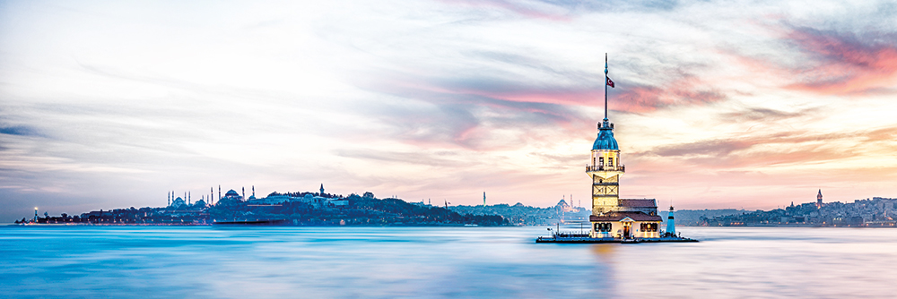
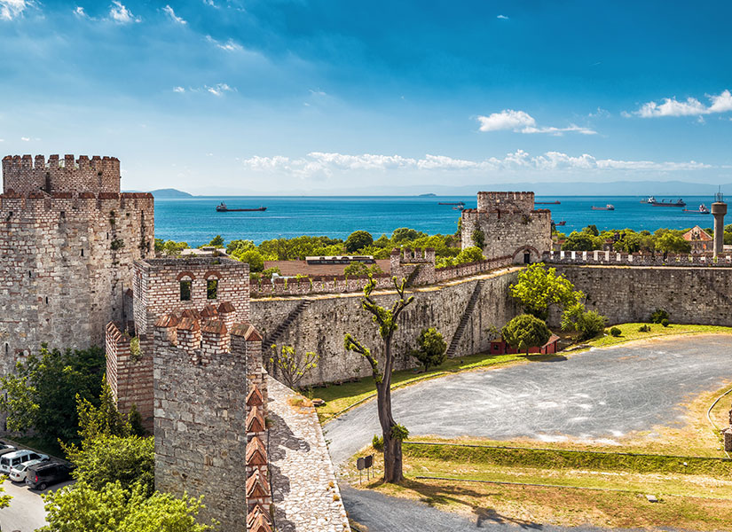
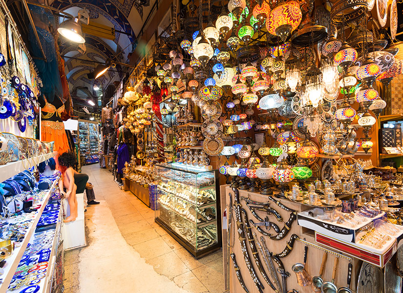

İSTANBUL
istanbul dünyanın en büyük, en önemli ve en güzel şehirlerinden birisidir. Boğazın iki yakasına yayılmış, olağanüstü güzellikteki tepeler, şehrin sakinlerini ve ziyaretçilerini sürekli büyüler. Dünya tarihinin en önemli komutanlarından ve devlet adamlarından biri olan Napolyon, “Eğer dünya tek bir devlet olsaydı, İstanbul başkent olurdu” demiştir.
Genel Bilgiler
- Yüzölçümü: 5.196 km²
- Nüfusu: 12.573.836 (2007)
- Nüfus Yoğunluğu: 2.420
- Şehir Nüfusu: 11.174.257 (2007)
- Köy Nüfusu: 1.399.579 (2007)
- Yıllık Nüfus Artış Hızı: %33,09
- Yıllık Şehir Nüfus Artış Hızı: %29,27
- Yıllık Köy Nüfus Artış Hızı: %80,72
- İl Trafik No: 34
- İl Telefon Kodu: 212 Avrupa - 216 Asya
TARİHÇE

Türkiye’nin üzerinde bulunduğu topraklar üzerindeki ilk yerleşmeler Aiol, Dor ve İyonlalılar, Traklar ve Persler gibi toplumlar tarafından Yontma Taş Devri’nde başlatıldı. Ardından III. Aleksandros egemenliğiyle birlikte Helenistik dönem, daha sonra da Roma ve Bizans dönemleri yaşandı. 11. Yüzyılda Selçukluların Anadolu’ya yerleşmesi sonucunda topraklar üzerinde Türkleştirme hareketi başladı ve 1071 Malazgirt Meydan Muharebesi sonrasında gelen zaferle Anadolu’daki Bizans Üstünlüğü Türkler lehine güç kaybetti.
Selçukluların yıkılmasından sonra kurulan Anadolu Selçukluları, bölgeyi 1243’teki Moğol istilasına kadar yönetti. İstila sonrasında Anadolu’da pek çok küçük Türk Beyliği oluştu. Bu beyliklerden biri olan Osmanlılar, 13. Yüzyılın sonlarından itibaren, Anadolu’nun hakimi oldular. Buna ek olarak Güneydoğu Avrupa, Batı Asya ve Kuzey Afrika üzerinde toprakları bulunun büyük bir imparatorluk kurarak Avrasya ve Afrika’da büyük güç kazandılar. 17. Yüzyıldan sonra Osmanlı İmparatorluğu gerileme dönemine geçti. I. Dünya Savaşı’nda yenik düşerek yıkılan imparatorluğun ardından, işgalci kuvvetlere karşı yapılan Kurtuluş Savaşı sonucunda Mustafa Kemal Atatürk tarafından 1923’te Türkiye Cumhuriyeti kuruldu.
İstanbul eşsiz sosyal ve kültürel zenginlikler barındıran bir şehirdir. Büyüleyici ve tarihi olmasının yanı sıra dinamik ve moderndir. Türkiye’nin en kalabalık şehri olan İstanbul, tarih boyunca farklı medeniyetlere ev sahipliği yapmıştır. Dünyanın en eski şehirlerinden biri olan İstanbul, M.S. 330 - 395 yılları arasında Roma İmparatorluğu, 395 - 1204 ile 1261 - 1453 yılları arasında Doğu Roma İmparatorluğu, 1204 - 1261 arasında Latin İmparatorluğu ve son olarak 1453 - 1922 yılları arasında Osmanlı İmparatorluğu'na başkentlik yaptı. İstanbul'u evi yapmış olan her medeniyet, yüce ve muhteşem şekillerde şehre kendi damgasını vurmuştur ve sonuçta ortaya çıkan da, her adımda evrensel tarih hissi yaratan bir şehir olmuştur.
İstanbul'un güneyinde Marmara Denizi, kuzeyinde ise Karadeniz uzanmakta, şehrin batısı Avrupa doğusu ise Asya kıtasında yer almaktadır. Gerek İstanbul'un iki yakasını gerekse iki kıtayı birbirinden ayıran stratejik ve estetik İstanbul Boğazı, Karadeniz'den Ege Denizi'ne daha sonra da Akdeniz'e açılan ilk kapıdır. Bir liman şehri ve önemli ticaret yollarının geçtiği bir şehir olması, binlerce yıl boyunca şehre önem kazandıran özellikleri olmuştur.
İstanbul’da Akdeniz ile Karadeniz iklimleri arasında geçiş iklimi olarak tanınan Marmara iklimi hâkimdir. Güneyde Marmara kıyılarında yazlar sıcak ve kurak, kışlar ılık geçerken, Karadeniz kıyılarında yazlar daha ılık ve yağışlı, kışlar da serin geçer. Ilıman bir iklime sahiptir.
GEZİLECEK YERLER
YEDİKULE ZİNDANLARI

“Yedi düvel zindanından beterdir Yedikule…” diyor ya Yeni Türkü, bir zamanlar İstanbul’un tüm haydutlarının son durağı olmuş Yedikule Zindanları.
Yedikule Zindanları
Aslında Bizans Dönemi’nde misafir kralların ağırlanması için inşa edilen yapı Fatih Sultan Mehmet döneminde eklenen 3 kule ve surlarla son halini alarak bir askeri garnizona dönüştürülmüş.
Bugün ise Türkiye’nin ve İstanbul’un en büyük açık hava müzelerinden biri olan Yedikule Hisarı Müzesi, İstanbul Fatih’te görülecek tarihi mekanlar listesinde önemli bir yere sahip.
KAPALI ÇARŞI

Tarihi Yarımada’nın en gözde duraklarından biri de Beyazıt’ta 550 yıldır ayakta duran Kapalı Çarşı. Yabancıların Grand Bazaar adıyla tanıdığı Kapalı Çarşı, içinde kaybolacağınız sokakları ve dünya altın piyasasına yön veren kuyumcularıyla ünlü.
Dünyanın en büyük çarşılarından: Kapalı Çarşı.
İstanbul’un en eski çarşısının içinde alışveriş yapmanın yanı sıra, burada satılan her şeyin İstanbul’un kadim ruhunu yansıttığını göreceksiniz.
BOZDOĞAN SU KEMERİ
Roma Dönemi’nde şehirlere su sağlamak için kurulan su kemerlerinden pek azı ayakta kalabilmiş.
İstanbul’un tam kalbinde Unkapanı’nda yer alan Bozdoğan ya da dünyanın tanıdığı adıyla Valens Su Kemeri, dünyada eşine az rastlanan uzunlukta ve sağlamlıkta. Bugün altından trafik akarken pek fark etmesek de 1.500 yılı aşkın süredir İstanbul’u seyrediyor.
YEMEKLER
- Sultanahmet Köftesi
- Ortaköy Kumpiri
- Sarıyer Börek
- Eminönü Balık Ekmek
- Sütlüce Uykuluk
- Süleymaniye Kuru Fasulyesi
Sultanahmet Köftesi :
Köfte severlerin muhakkak denemesi gereken Sultanahmet Köftesinin lezzeti bir başka. Sultanahmet köftecilerinin en eskisi, 1920 yılında açılan Tarihi Sultanahmet Halk Köftecisi Selim Usta’dır ancak semtin her noktasında bu muhteşem lezzete rastlamanız da mümkün.
Ortaköy-Kumpir :
Ortaköy’ün en sevilen ve bilinen lezzetlerinden olan Kumpir, özellikle turistler tarafından çokça tercih edilmektedir. Sadece turistler değil yolu Ortaköy’e düşen İstanbulluların da yemekten son derece zevk aldığı bu lezzeti denemeyi unutmayın.
Sarıyer-Börek :
Böreğin her türlüsü var ülkemizde belki de. Her yörede ayrı güzel olan börek çeşitlerimizi bir yana koyalım ne bugün İstanbul’un nefis Sarıyer böreğine bakalım. Peynirli, kıymalı, ıspanaklı ve patatesli çeşitleriyle Sarıyer sokaklarını mis gibi kokutan bu böreğin kendine has bir lezzeti var.
Eminönü-Balık Ekmek :
İstanbul’un simge semtlerinden biri olan Eminönü’nden geçerken balık ekmek kokusu ile iştahınız kabaracaktır. “Balık ekmek işte, nesi var ki?” diyenlere denemeden karar vermeyin diyelim. Bu arada Eminönü’nde balık ekmek yeme fırsatı bulanlara aynı yerde bulunan turşu dükkânlarına da uğramayı öneriyoruz.
Sütlüce-Uykuluk :
Bir sakatat türü olan Uykuluğun en güzel hali Sütlüce’de yenir. Pek çok faydası olan Uykuluk genelde bahar aylarında tüketilmektedir.
Süleymaniye-Kuru Fasulye :
Kuru fasülyenin nesi meşhur demeyin! Adını Süleymaniye Külliyesi’nden almış olan Süleymaniye semtinin kuru fasülyecileri meşhur.
Web Teknoloji Proje Ödevidir © / 2021
Web Teknolojileri